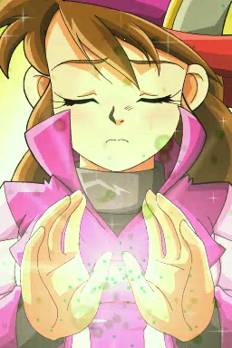
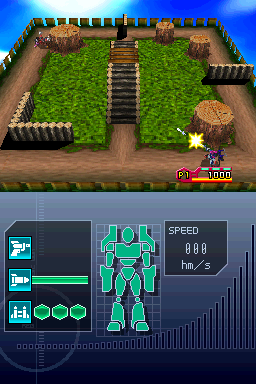
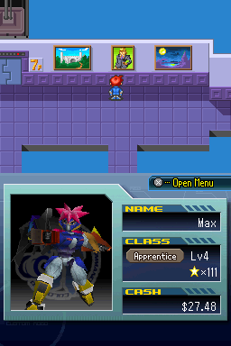
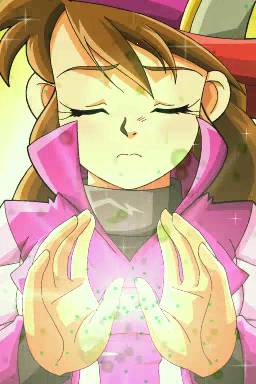
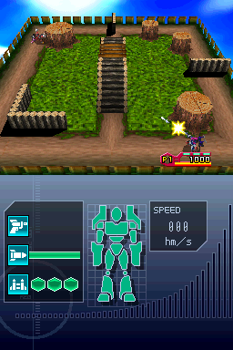
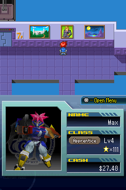

Custom Robo Arena

Not Complete on 2022-12-14
2 / 5
Release Date: Mar 19, 2007
Meta Score: 74
Screenshots
 





Notes
I wanted to like this one and finish it but ultimately I gave up.
It started off fairly strong. Action RPG robot battling combined with an RPG shell that's quite reminiscent of Mega Man Battle Network in theme and certain aspects of its execution. However, it just got really stale and I was having no fun, struggling to motivate myself to play, despite being only about 1/2 way through the game.
The combat was fun at first but doesn't really have enough variety fighting against the AI. Various mechanics make it annoying, like enforced grinding to progress (despite levelling up doing apparently nothing) and some other bits of annoying design.
I think if this game was about half as long it would have been better and I would have finished it.